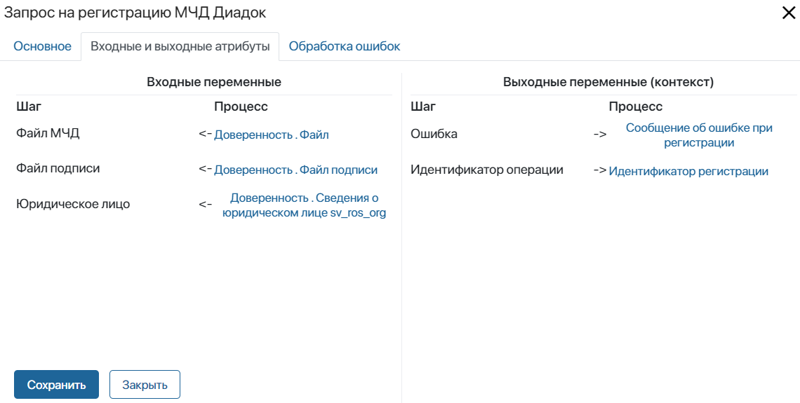
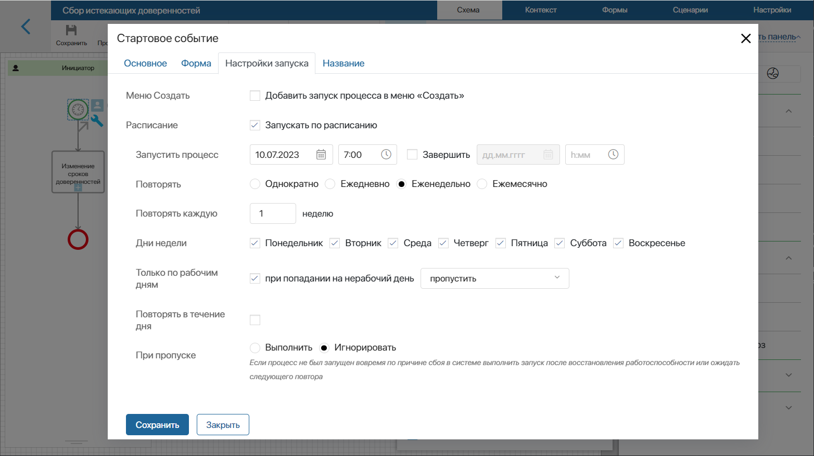
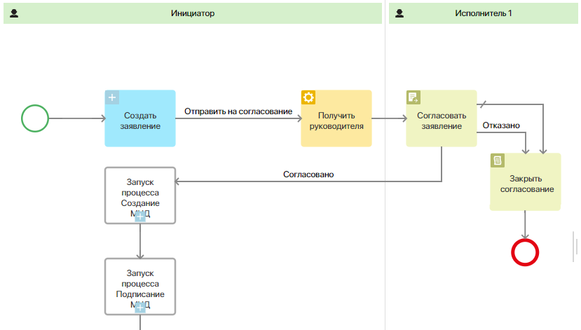
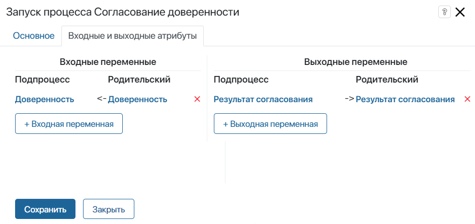
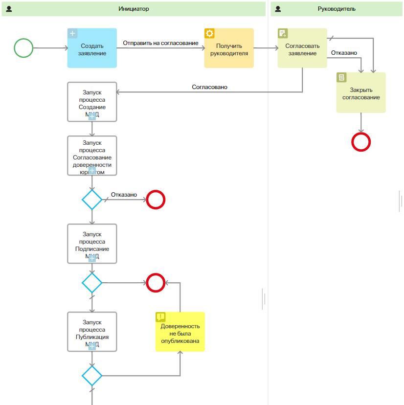

Адаптация маршрутов обработки доверенностей выполняется на уровне раздела Настройка МЧД.
По умолчанию в разделе созданы процессы Сбор истекающих доверенностей и Оформление доверенности. Они состоят из подпроцессов, настроенных на уровне раздела МЧД. Поскольку раздел МЧД заблокирован от редактирования, подпроцессы нельзя изменять.
Вы можете моделировать только основные процессы: добавлять на схемы графические элементы, включая блоки, разработанные на уровне бизнес-решения Управление МЧД, включать в маршрут пользовательские подпроцессы.
Графические элементы бизнес-решения
В решении предусмотрены преднастроенные графические элементы для моделирования процессов. С их помощью можно изменять логику маршрута обработки доверенностей.
Вы можете отправлять запросы в Диадок, Контур.Доверенность или МИГ24 и получать данные из этих сервисов обработки МЧД. Для этого размещайте на схеме процесса отдельные блоки. Доступны следующие действия:
- загрузка в сервисы файлов доверенности, её подписи или заявления на отмену;
- регистрация доверенности в сервисе или её отзыв;
- получение данных из сервиса: параметров подключения, статуса доверенности, результата регистрации или отзыва и т. д.
Все элементы расположены в правой части дизайнера бизнес-процессов на вкладке Интеграции.

Настройка выполняется одинаково для всех элементов. Разместите элемент на схеме бизнес-процесса и дважды нажмите на него. В открывшемся окне перейдите на вкладку Входные и Выходные атрибуты и сопоставьте заданные параметры со свойствами из контекста бизнес-процесса.
Например, чтобы зарегистрировать доверенность в Диадок, используется элемент Запрос на регистрацию МЧД Диадок. В его настройках передаются свойства из приложения Доверенности, в которых хранятся файл МЧД, файл подписи и сведения о юридическом лице. В выходных переменных указываются свойства для записи результата выполнения регистрации.

Названия и коды свойств, используемых в решении, вы можете посмотреть в разделе Настройка МЧД на странице Перечень переменных.
Изменить процесс «Сбор истекающих доверенностей»
В решении предусмотрен бизнес-процесс, в рамках которого ежедневно выполняется сбор добавленных в раздел МЧД доверенностей с заканчивающимся сроком действия. Руководитель организации-доверителя выполняет задачу продления истекающих доверенностей.
В ходе процесса Сбор истекающих доверенностей отрабатывает подпроцесс Изменение сроков доверенностей, созданный на уровне раздела МЧД. Поскольку раздел заблокирован, отредактировать настройки подпроцесса нельзя.
Однако вы можете изменить основной процесс, например, задать периодичность его запуска. Для этого:
- Перейдите в разделе Настройка МЧД, нажмите значок шестерёнки рядом с его названием и выберите Бизнес-процессы.
- Откройте процесс Сбор истекающих доверенностей в дизайнере бизнес-процессов.
- Дважды нажмите на событие Таймер, выберите вкладку Настройки запуска и измените параметры. Например, укажите еженедельный запуск процесса сбора истекающих доверенностей.

- Сохраните настройки элемента.
- Сохраните и опубликуйте процесс.
Изменить процесс «Оформление доверенности»
Основной процесс Оформление доверенности создан в разделе Настройка МЧД. В нём каждый этап представляет собой отдельный подпроцесс: создание, подписание, публикация. Они ссылаются на добавленные в раздел МЧД бизнес-процессы. Поскольку этот раздел заблокирован от внесения изменений, подпроцессы нельзя отредактировать.
Чтобы адаптировать маршрут оформления доверенности, вы можете изменить основной процесс из раздела Настройка МЧД.
Допустим в компании у линейных сотрудников ограничен доступ к разделу МЧД. Для работы они используют раздел Настройка МЧД.
Пользователи подают заявления на выдачу доверенности через настроенное в разделе приложение. Далее заявление согласовывается с руководителем. При успешном согласовании пользователю назначается задача создания доверенности. После этого доверенность отправляется на согласование юристу. Затем подписывается, регистрируется и выпускается.
Чтобы таким образом адаптировать маршрут обработки доверенности, перейдите в раздел Настройка МЧД и выполните следующие действия:
- Настройте приложение Расширение Доверенности, чтобы оно использовалось в качестве реестра заявлений на выдачу доверенности. Для этого в контекст приложения добавьте свойства для загрузки файла заявления и записи элемента выпущенной доверенности. Подробнее об этом читайте в статье «Адаптация бизнес-решения „Управление МЧД“».
- Согласование созданной доверенности юристом — это дополнительный этап основного процесса оформления доверенности. Чтобы реализовать этот шаг можно создать отдельный бизнес-процесс и включить его в маршрут обработки в виде подпроцесса.
Для этого рядом с названием раздела Настройка МЧД нажмите значок шестерёнки и выберите Бизнес-процессы. Создайте процесс Согласование доверенности юристом. Смоделируйте его схему, сохраните и опубликуйте.
- После выполнения подготовительных настроек можно перейти к редактированию основного маршрута обработки доверенности. Для этого в списке процессов раздела Настройка МЧД выберите преднастроенный процесс Оформление доверенности.
- Чтобы обращаться к отредактированному на шаге 1 приложению, включите его в контекст процесса. Для этого в дизайнере перейдите на вкладку Контекст и добавьте переменную типа Приложение, ссылающуюся на Расширение Доверенности.
- Чтобы после запуска процесса сотруднику назначалась задача добавить заявление на выпуск доверенности, разместите на схеме блок Создание элемента. В его настройках укажите переменную Расширение Доверенности.
- Для отправки созданного заявления на согласование, нужно определить руководителя пользователя, который запустил процесс. Для этого используется блок Получить руководителя. В его настройках создайте переменную, в которую будет записываться руководитель.
- Чтобы дальнейшие задачи в процессе выполнял руководитель инициатора, добавьте зону ответственности. Поскольку руководитель определяется в ходе процесса, выберите опцию Динамическая зона ответственности и укажите созданную на предыдущем шаге переменную.
- В рамках добавленной зоны ответственности настройте этап согласования заявления. Это делается с помощью блоков Согласование и Закрыть согласование.

- Настройте этап согласования доверенности юристом. Для этого разместите блок Запуск процесса между подпроцессами создания и подписания доверенности.
- В настройках блока укажите смоделированный ранее процесс Согласование доверенности юристом. Основной процесс и подпроцесс необходимо связать между собой. Для этого на вкладке Входные и выходные атрибуты сопоставьте свойства из контекстов настраиваемых процессов.
В процесс согласования в качестве входного свойства передаётся элемент доверенности. В выходную переменную записывается результат выполнения подпроцесса — резолюция при согласовании.

- Если юрист согласовал доверенность, после пользовательского этапа выполнится следующий шаг обработки, при отказе — процесс завершится. Для этого разместите исключающий шлюз и конечное событие. Резолюцию Отказано отметьте как переход по умолчанию.

- Сохраните и опубликуйте процесс.
Теперь выдача доверенности сотруднику будет проходить два этапа согласования: заявку на выпуск рассматривает руководитель, а заполненные данные доверенности — юрист. После согласования маршрут продолжается согласно преднастроенной схеме процесса Оформление доверенности.